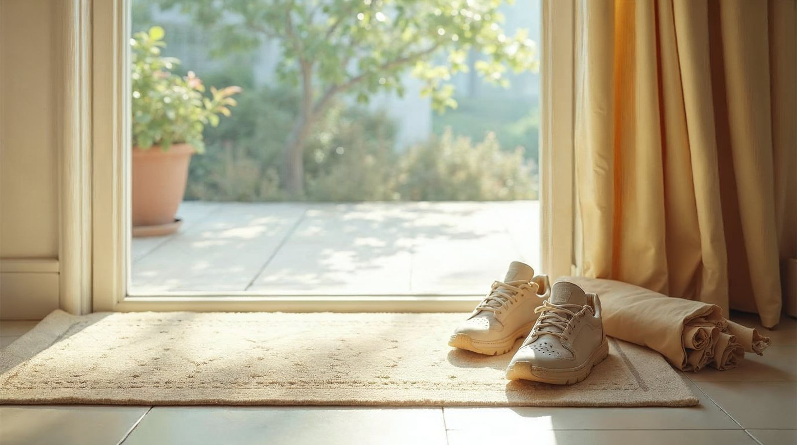
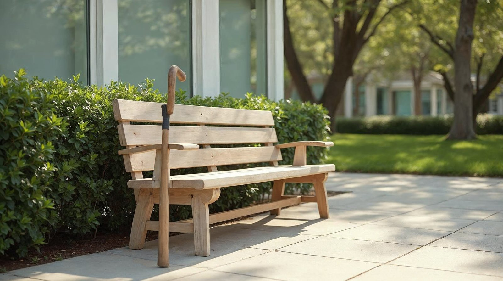
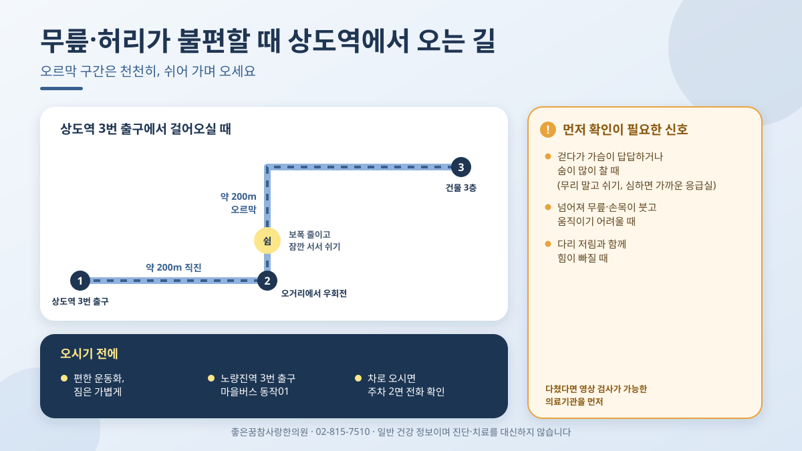

이종호 한의사 감수좋은꿈참사랑한의원 대표원장 (한의사 면허번호 19769)발행 2026-11-24 · 수정 2026-11-26
이 글의 차례
- 왜 미리 길을 알아 두면 좋을까요
- 처음 오는 길, 이런 표지를 기억하세요
- 왜 오르막에서 무릎과 허리가 더 힘들까요
- 오르막과 내리막은 다른 얘기예요
- 먼저 이렇게 여쭙니다
- 걸어올지 마을버스를 탈지, 이렇게 골라 보세요
- 일상에서 먼저 해 볼 수 있는 것
- 마을버스를 타신다면
- 오르막을 덜 힘들게 걷는 요령
- 신발과 옷차림도 도움이 돼요
- 무릎과 허리가 같이 아플 때
- 오르막이 겁나서 집에만 계신다면
- 날씨에 따라 조금씩 달라져요
- 도착하신 뒤에는
- 보호자와 함께 오신다면
- 집에 돌아가실 때는
- 하나만 부탁드릴게요
- 한의원에서 함께 살필 수 있는 경우
- 이렇게 기록해 오시면 상담이 쉬워집니다
- 이런 증상은 먼저 확인이 필요합니다
상도역 3번 출구로 나와 약 200m 직진한 뒤 오거리에서 상도노빌리티 상가를 오른쪽에 끼고 우회전해 약 200m 올라오시면, 신동아리버파크 후문이 있는 작은 사거리 우측 도로 쪽 첫 번째 건물인 신성빌딩 3층·5층이 한의원입니다.
무릎이나 허리가 불편하시다면 오르막 구간에서 서두르지 말고 쉬어 오시거나, 노량진역에서 마을버스를 타고 오시는 방법도 있습니다.
진료실에서 이런 말씀을 종종 들어요. "원장님, 여기까지 올라오는 게 제일 힘들었어요." 아파서 오시는 길인데 오르막이 있으니 얼마나 신경 쓰이셨겠어요. 그 마음 충분히 이해해요.
그러니까 사실은 같은 길이라도 어떻게 걸어오시느냐에 따라 몸이 받는 부담이 꽤 달라요. 빨리 올라오는 것보다 천천히, 쉬어 가며 오시는 게 훨씬 중요하거든요. 오늘은 그 요령을 같이 정리해 볼게요.
왜 미리 길을 알아 두면 좋을까요
- 오르막 구간이 있어 무릎이나 허리가 불편하면 걷는 동안 부담을 느끼실 수 있습니다.
- 처음 오시는 길은 방향을 찾느라 더 오래 걷게 되기 쉽습니다.
- 진료 전에 많이 지치면 불편한 동작을 설명하기도 어려워집니다.
처음 오시는 분들은 길을 잘못 들어 한 블록을 더 걷는 경우가 있어요. 평소라면 별일 아니지만, 무릎이 아픈 날에는 그 몇십 미터가 크게 느껴지거든요. 오르막을 잘못 올랐다가 다시 내려와야 하면 무릎이 두 번 고생하는 셈이 되기도 하고요. 그래서 오시기 전에 길을 한 번 머릿속에 그려 두시면 좋아요.
처음 오는 길, 이런 표지를 기억하세요
상도역 3번 출구로 나오시면 먼저 앞으로 쭉 걸어 오거리까지 오세요. 오거리에 닿으면 상도노빌리티 상가가 보이는데, 그 상가를 오른쪽에 두고 우회전하시면 돼요. 여기서부터가 오르막이에요.
오르막을 약 200m 올라오시면 신동아리버파크 후문이 있는 작은 사거리가 나와요. 그 사거리의 우측 도로 쪽 첫 번째 건물이 신성빌딩이고, 3층과 5층이 한의원이에요.
길을 헷갈리셨다면 무리해서 이리저리 걷지 마시고 그 자리에서 잠깐 서서 지도 앱을 보시거나 전화로 여쭤봐 주세요. 헤매는 몇 분이 아픈 무릎에는 꽤 큰 부담이 되거든요.
왜 오르막에서 무릎과 허리가 더 힘들까요
오르막을 걸을 때는 한 걸음마다 몸을 위로 들어 올려야 해요. 이때 허벅지 앞 근육과 무릎이 몸무게를 받치면서 힘을 많이 쓰게 되는 거예요. 평지에서는 괜찮던 무릎이 언덕에서만 시큰한 이유가 여기에 있어요.
허리도 마찬가지예요. 오르막에서는 저도 모르게 상체를 앞으로 숙이게 되잖아요. 그 자세로 오래 걸으면 허리 뒤쪽 근육이 계속 버티느라 뻐근해지기 쉬워요.
짐까지 들고 있으면 더해요. 한쪽 손에 무거운 가방을 들면 몸이 그쪽으로 기울면서 반대쪽 허리와 무릎에 힘이 더 실리거든요. 몸이 아플 땐 짐을 줄이는 것만으로도 오르막이 한결 덜 힘들 수 있어요.
오르막과 내리막은 다른 얘기예요
두 개가 다른 얘기거든요. 오르막은 숨이 차고 허벅지에 힘이 많이 들어가는 길이에요. 반대로 내리막은 숨은 덜 차지만, 한 걸음 내디딜 때마다 무릎 앞쪽으로 충격이 쿵쿵 실리는 길이에요.
그래서 올라올 때는 괜찮았는데 진료 끝나고 내려가는 길에 무릎이 더 아프다는 분들이 계세요. 내려갈 때는 보폭을 더 줄이고, 발뒤꿈치부터 쿵 내딛기보다 발바닥 전체로 살며시 딛는 게 좋아요.
어느 쪽이 더 불편하신지 알려 주시면 진료 때 살필 곳이 달라져요. 계단을 오를 때 아픈지, 내려갈 때 아픈지도 같은 이유로 여쭤보는 거예요.

먼저 이렇게 여쭙니다
- 평소 몇 분 정도 쉬지 않고 걸으실 수 있나요?
- 계단과 오르막 중 어느 쪽이 더 불편하신가요?
- 지팡이나 보호대를 쓰시나요?
- 보호자와 함께 오실 수 있나요?
걸어올지 마을버스를 탈지, 이렇게 골라 보세요
- 평지에서 쉬지 않고 10분 이상 걷기가 어려우신가요?
- 오르막을 오르면 무릎이나 허리 통증이 바로 심해지나요?
- 최근에 넘어질 뻔한 적이 있나요?
- 비나 눈이 와서 길이 미끄러운 날인가요?
하나라도 해당되면 무리해서 걸어오시기보다 노량진역 쪽에서 마을버스를 타시거나, 보호자와 함께 오시는 방법을 생각해 보세요. 어느 쪽이 편하실지 망설여지면 방문 전에 전화로 여쭤보셔도 돼요.
일상에서 먼저 해 볼 수 있는 것
- 상도역 3번 출구로 나와 약 200m 직진한 뒤 오거리에서 우회전해 약 200m 올라오기
- 노량진역(1·9호선) 3번 출구에서 약 100m 직진한 정류장에서 마을버스 동작01을 타고 신동아리버파크 정류장에서 내리기(건너편 건물 3층)
- 오르막 구간은 보폭을 줄이고 필요하면 잠깐 서서 쉬기
- 건물 안에서는 계단 대신 엘리베이터 이용하기
- 편한 운동화를 신고 짐은 가볍게 하기
- 차로 오실 때는 주차 가능 여부와 위치를 미리 전화(02-815-7510)로 확인하기
마을버스를 타신다면
1·9호선을 타고 오신다면 노량진역 3번 출구로 나와 약 100m 직진하시면 마을버스 정류장이 있어요. 동작01번을 타고 신동아리버파크 정류장에서 내리시면, 건너편 건물 3층에 한의원이 보여요.
버스에 오르내릴 때는 손잡이를 꼭 잡고 한 계단씩 천천히 디뎌 주세요. 무릎이 아픈 분들은 버스 계단을 내려갈 때 가장 조심하셔야 해요. 버스가 완전히 멈춘 뒤에 일어나셔도 늦지 않아요.
내리신 뒤 길을 건널 때도 서두르지 마시고, 신호를 한 번 보내더라도 여유 있게 건너 주세요.
오르막을 덜 힘들게 걷는 요령
오르막에서는 최대한 천천히 걸어 주세요. 보폭을 평소의 반쯤으로 줄이고, 발바닥 전체로 땅을 디디는 거예요. 큰 걸음으로 성큼성큼 오르면 무릎이 한 번에 받는 힘이 커지거든요.
숨이 차거나 무릎이 시큰하면 그 자리에 잠깐 서서 숨을 고르세요. 쉬어 가는 건 부끄러운 게 아니에요. 오히려 쉬지 않고 버텨서 올라오시면 진료실에 도착했을 때 다리가 후들거려 불편한 동작을 설명하기 어려워지는 경우가 많아요.
지팡이를 쓰신다면 보통 아픈 다리 반대쪽 손에 드는 게 몸을 받치기 편해요. 길가 난간이나 벽이 있으면 살짝 짚어 가며 오셔도 좋아요. 팔을 가볍게 흔들며 걸으면 몸의 균형을 잡는 데도 도움이 돼요.
신발과 옷차림도 도움이 돼요
굽이 높은 신발이나 바닥이 딱딱한 구두는 오르막에서 무릎과 허리에 부담을 더해요. 발에 잘 맞고 바닥이 적당히 푹신한 운동화가 가장 무난해요. 끈이 있는 신발이라면 발등을 너무 조이지 않게 묶어 주세요.
가방은 한쪽 어깨에 메는 것보다 양쪽으로 메는 배낭이 몸의 균형을 잡기 편해요. 짐이 많은 날에는 꼭 필요한 것만 챙기시고요.
옷은 걷다 보면 몸이 더워지니까 벗고 입기 쉽게 겹쳐 입는 게 좋아요. 땀이 식으면서 허리가 차가워지면 오히려 뻐근해질 수 있거든요.
무릎과 허리가 같이 아플 때
무릎과 허리가 같이 불편하신 분들도 많아요. 허리가 아프면 걸음걸이가 달라지고, 달라진 걸음걸이가 다시 무릎에 부담을 주는 경우가 있거든요. 서로 영향을 주고받는 거예요.
이럴 땐 어느 쪽이 먼저 아프기 시작했는지, 어느 쪽이 더 힘든지를 알려 주시면 좋아요. 오르막을 걷다가 허리가 먼저 뻐근해지는지, 무릎이 먼저 시큰해지는지만 기억해 두셔도 큰 도움이 돼요. 한쪽 다리만 아픈지, 양쪽이 다 아픈지도 같이 봐 주세요.
오르막이 겁나서 집에만 계신다면
무릎이 아프다 보니 아예 밖에 안 나가게 되셨다는 분들도 계세요. 그 마음은 이해해요. 그런데 움직임이 줄면 다리 힘이 더 빠지고, 다음에 걸을 때 더 힘들어지는 경우가 많아요.
그래서 저는 걷지 말라고 하지 않아요. 약하게, 오래, 자주 걸으시라고 말씀드려요. 일주일에 한 번 무리해서 오래 걷는 것보다, 평지를 천천히 짧게라도 여러 번 걷는 게 몸에 더 잘 맞는 경우가 많거든요.
오르막은 쉬어 가며 오르면 되고, 힘든 날은 마을버스를 타면 돼요. 방법을 바꾸는 거지 포기하는 게 아니에요. 뭐라도 하시면 되는 거예요.
날씨에 따라 조금씩 달라져요
비나 눈이 온 날은 오르막과 내리막이 미끄러워요. 이런 날은 바닥이 잘 미끄러지지 않는 신발을 신으시고, 우산은 가벼운 것으로 챙기세요. 한 손에 우산, 한 손에 짐을 들면 몸의 균형을 잡기가 어렵거든요.
겨울 아침에는 몸이 굳어 있어서 첫걸음부터 무릎이 뻣뻣하다는 분들이 많아요. 집을 나서기 전에 앉은 자리에서 무릎을 천천히 몇 번 폈다 굽혀 주시고, 무릎을 덮는 따뜻한 옷을 입고 나오세요.
더운 여름에는 오르막에서 땀이 나고 숨이 쉽게 차요. 물을 조금 챙기시고, 해가 강한 한낮보다 덜 더운 시간대를 고르시면 몸이 덜 지쳐요.
도착하신 뒤에는
건물에 도착하시면 계단 대신 엘리베이터를 이용해 주세요. 오르막을 올라오느라 이미 다리를 많이 쓰셨으니까, 남은 힘은 아껴 두시는 게 좋아요.
접수하신 뒤에는 잠시 앉아서 숨을 고르세요. 급히 걸어오신 직후에는 맥이 빨라져 있을 수 있어서, 저도 숨이 가라앉은 뒤에 맥을 짚는 게 몸 상태를 보기에 더 좋거든요.
오시는 동안 어느 지점에서 아팠는지, 몇 번 쉬셨는지 기억해 두셨다가 말씀해 주세요. 그게 진료실에서 제일 생생한 정보가 되는 거예요.
땀이 났다면 겉옷을 벗고 물 한 모금 드시면서 몸을 식혀 주세요. 진료받는 동안 땀이 식어 한기가 들면 허리가 더 뻣뻣해질 수 있거든요.
무릎 보호대를 하고 오셨다면 진료 때 풀어야 할 수도 있으니, 혼자 풀고 차기 쉬운 것으로 하고 오시면 편해요. 무릎을 걷어 올리기 쉬운 바지를 입고 오시는 것도 도움이 돼요.
보호자와 함께 오신다면
보호자와 함께 오시면 오르막에서 팔을 살짝 잡아 주시거나 짐을 대신 들어 주시는 것만으로도 한결 수월해요. 걸음은 아프신 분 속도에 맞춰 주세요. 옆에서 빨리 걸으면 저도 모르게 따라 서두르게 되거든요.
보호자께서 평소 집에서 보신 모습, 예를 들어 계단을 오를 때 난간을 꼭 잡으신다거나 앉았다 일어나실 때 힘들어하신다는 이야기를 진료 때 보태 주시면 도움이 돼요.
집에 돌아가실 때는
진료를 받고 나면 조금 가벼워진 느낌에 성큼성큼 내려가시는 분들이 있어요. 그런데 내리막은 무릎에 충격이 더 실리는 길이에요. 올라오실 때처럼 보폭을 줄이고 천천히 내려가 주세요.
집에 도착하시면 바로 집안일을 시작하기보다 잠깐 앉아서 쉬어 주세요. 그날 저녁과 다음 날 아침에 무릎과 허리가 어땠는지 한 줄 메모해 두시면, 다음 진료 때 이어서 보기 좋아요.
하나만 부탁드릴게요
숙제는 하나만 드릴게요. 오르막에서는 최대한 천천히, 쉬어 가며 오세요. 딴 건 편하게 하셔도 돼요. 아픈 곳을 살피는 건 제가 맡을게요.
일찍 도착하려고 서두르시는 것보다, 조금 늦더라도 천천히 오시는 게 몸에는 더 좋아요. 늦을 것 같으면 편하게 전화 한 통 주세요.

한의원에서 함께 살필 수 있는 경우
- 걸어오시는 동안 불편했던 동작을 진료 때 이야기해 주시면 함께 살핍니다.
- 무릎과 허리가 함께 불편한 경우 걷는 모습과 자세를 함께 살핍니다.
- 진료 뒤 집까지 돌아가는 길도 생각해 생활 요령을 함께 정리합니다.
좋은꿈참사랑한의원에서는 모든 분께 맥부터 짚으며 오시는 동안 불편했던 동작을 여쭙고, 필요하다고 판단될 때 초음파로 무릎이나 허리 주변을 살핍니다. 걷는 모습과 자세를 함께 본 뒤 침·약침·추나·온열 등 상태에 맞는 방법을 정하고, 귀가 전에는 집까지 돌아가는 길에 무리하지 않는 요령도 알려 드립니다.
진료실에서는 먼저 맥을 짚고, 오시는 길 어디에서 어떻게 불편하셨는지 여쭤봐요. 그다음 앉았다 일어나는 동작이나 몇 걸음 걷는 모습을 보면서 어느 동작에서 아픈지 같이 확인해요.
나이가 들면서 무릎이 예전 같지 않은 건 원래 그래요. 때가 돼서 오는 자연스러운 변화인 경우가 많거든요. 오래 쓴 자개장도 아끼며 쓰면 오래 쓰잖아요. 겁내시기보다 어떻게 하면 덜 아프게 잘 쓸지를 같이 찾아보자는 거예요.
무릎이 아프다고 무릎만 보지 않아요. 허리와 골반, 발목이 어떻게 같이 움직이는지 함께 봐요. 무릎이 아픈 이유가 다른 곳에서 시작되는 경우도 있거든요. 아픈 데만이 아니라 몸 전체를 보려는 거예요.
드시는 약이 있다면 꼭 알려 주세요. 한약은 드시는 약을 먼저 확인한 뒤 정하고, 처방받은 약은 처방한 의사와 상의 없이 줄이거나 끊지 않습니다.
치료를 시작하면 보통 한 달 정도 지내 보면서, 오르막을 오를 때와 계단을 내려갈 때가 어떻게 달라지는지 같이 보고 다음을 정해요. 통증이 줄었다고 바로 끝내기보다, 다시 아프지 않게 어떻게 지낼지도 함께 이야기 나눠요.
이렇게 기록해 오시면 상담이 쉬워집니다
- 쉬지 않고 걸을 수 있는 시간
- 오르막과 계단 중 더 불편한 것
- 쓰고 계신 지팡이나 보호대
- 오시는 동안 불편했던 순간
휴대폰 메모에 "오르막 중간에 두 번 쉼, 오른쪽 무릎 시큰 4점"처럼 한 줄만 적어 오셔도 충분해요. 아픈 정도를 0에서 10 사이 숫자로 적어 두시면, 다음에 오셨을 때 달라진 점을 비교하기가 훨씬 쉬워져요.
아픈 무릎이 부어 보이거나 열감이 느껴졌던 날이 있다면 사진도 한 장 남겨 두세요. 진료 날에는 가라앉아 있는 경우가 많거든요.
이런 증상은 먼저 확인이 필요합니다
- 걷다가 가슴이 답답하거나 숨이 많이 찬 경우
- 넘어진 뒤 무릎이나 손목이 붓거나 움직이기 어려운 경우
이런 신호가 있으면 한의원보다 가까운 병원이나 응급실을 먼저 찾으세요.

여쭙는 것
- 평소 몇 분 정도 쉬지 않고 걸으실 수 있나요?
- 계단과 오르막 중 어느 쪽이 더 불편하신가요?
- 지팡이나 보호대를 쓰시나요?
생활에서 해 볼 것
- 상도역 3번 출구로 나와 약 200m 직진한 뒤 오거리에서 우회전해 약 200m 올…
- 노량진역(1·9호선) 3번 출구에서 약 100m 직진한 정류장에서 마을버스 동작01…
- 오르막 구간은 보폭을 줄이고 필요하면 잠깐 서서 쉬기
한의원에서 함께 살필 것
- 걸어오시는 동안 불편했던 동작을 진료 때 이야기해 주시면 함께 살핍니다.
- 무릎과 허리가 함께 불편한 경우 걷는 모습과 자세를 함께 살핍니다.
- 진료 뒤 집까지 돌아가는 길도 생각해 생활 요령을 함께 정리합니다.
먼저 확인이 필요한 신호
- 걷다가 가슴이 답답하거나 숨이 많이 찬 경우
- 넘어진 뒤 무릎이나 손목이 붓거나 움직이기 어려운 경우
한눈에 보는 표
| 구분 | 핵심 |
|---|---|
| 여쭙는 것 | 평소 몇 분 정도 쉬지 않고 걸으실 수 있나요? 계단과 오르막 중 어느 쪽이 더 불편하신가요? |
| 생활에서 해 볼 것 | 상도역 3번 출구로 나와 약 200m 직진한 뒤 오거리에서 우회전해 약 200m 올라오기 노량진역(1·9호선) 3번 출구에서 약 100m 직진한 정류장에서 마을버스 동작01을 타고 신동아리버파크 정류장에서 내리기(건너편 건물 3층) |
| 한의원에서 함께 살필 것 | 걸어오시는 동안 불편했던 동작을 진료 때 이야기해 주시면 함께 살핍니다. 무릎과 허리가 함께 불편한 경우 걷는 모습과 자세를 함께 살핍니다. |
| 먼저 확인이 필요한 신호 | 걷다가 가슴이 답답하거나 숨이 많이 찬 경우 넘어진 뒤 무릎이나 손목이 붓거나 움직이기 어려운 경우 |
자주 묻는 질문
오시는 길을 더 자세히 볼 수 있나요?
홈페이지의 예약·오시는 길 페이지에서 네이버 지도와 구글 지도 링크로 확인하실 수 있습니다.
보호자가 진료실에 함께 들어가도 되나요?
원하시면 접수할 때 말씀해 주세요. 상황에 맞게 안내해 드립니다.
진료 시간은 어떻게 되나요?
평일은 09:30~20:00(점심 13:00~14:00), 토·일·공휴일은 09:30~15:00(점심시간 없음)에 진료합니다.
무릎 보호대를 하고 와도 되나요?
네. 평소 쓰시는 보호대를 하고 오시면 됩니다. 진료 때 어떤 보호대를 언제 쓰시는지도 함께 여쭙습니다.
좋은꿈참사랑한의원은 재진 때 지난번 이야기부터 이어서 여쭙니다. 진료시간과 예약은 오시는 길에서 확인하세요.
어디서 상담받을 수 있나요?
좋은꿈참사랑한의원은 서울 동작구 만양로2길 2 신성빌딩 3층·5층(서울 동작구 상도동, 7호선 상도역 3번 출구 근처)에 있습니다. 한의사 3명(이종호 대표원장, 조영기 수석진료원장, 정원영 진료원장)이 진료합니다. 진료시간은 평일 09:30~20:00(점심 13:00~14:00), 토·일·공휴일 09:30~15:00이며, 방문 전 전화로 확인을 권합니다. 예약은 네이버 예약, 카카오톡 상담, 전화 02-815-7510로 받습니다.
이 글은 일반적인 건강 정보이며 개인의 진단이나 치료를 대신하지 않습니다. 증상이 있거나 복용 중인 약이 있다면 진료를 통해 확인하세요. 치료 효과는 개인마다 다를 수 있습니다.
작성 기준: 일반적으로 알려져 있는 건강 정보를 참고해 정리했습니다(대표원장 감수). 증상 기록은 1~2주 동안 하루 1회, 비슷한 시간에 적어 오시면 지난 상태와 비교하기 쉽습니다.